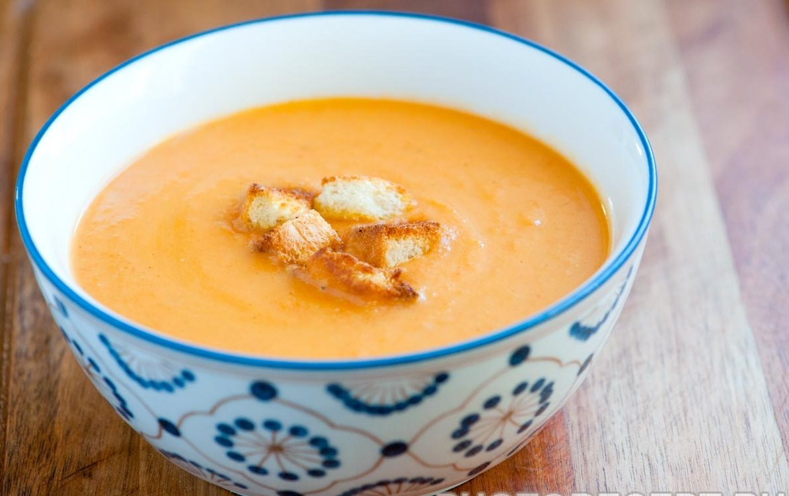
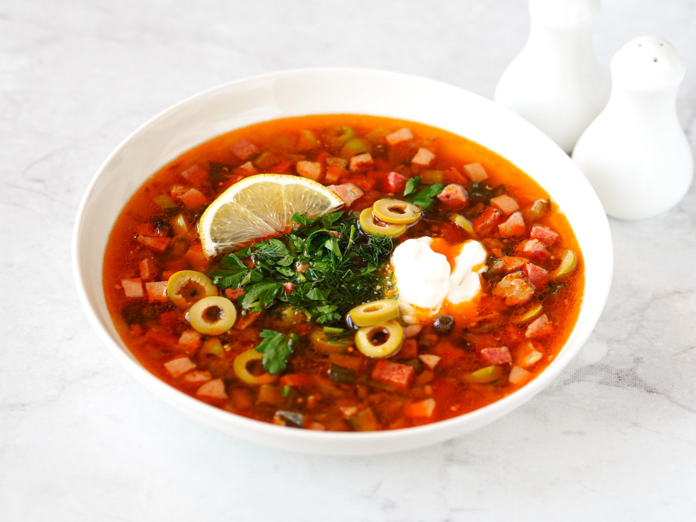
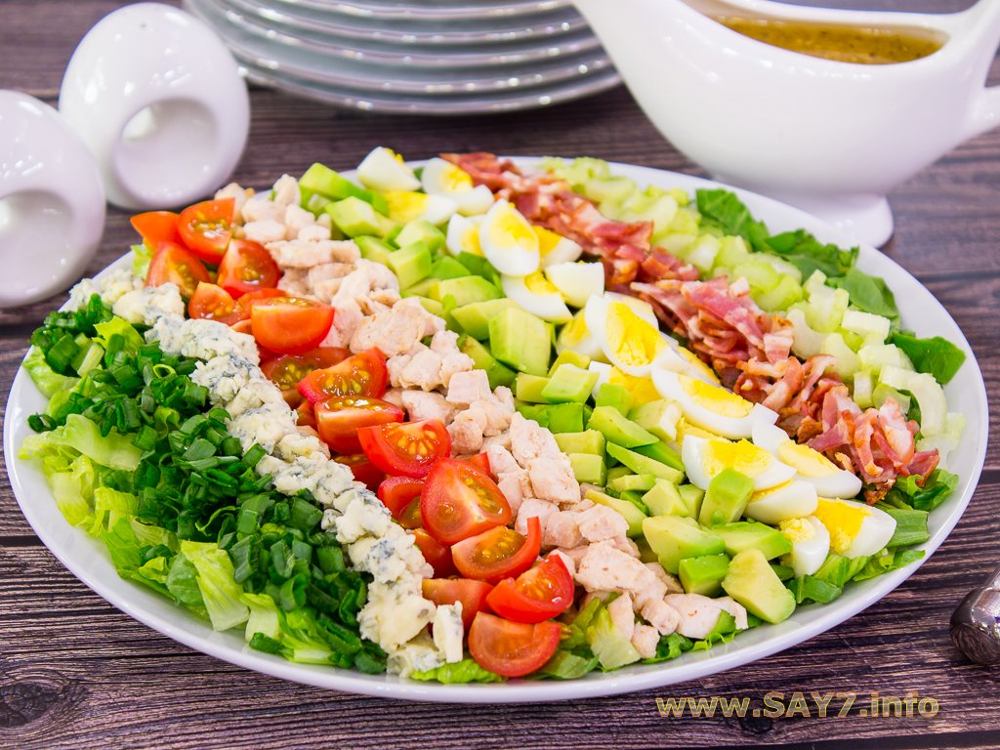

Каталог рецептов
Тыквенный суп-пюре

Ароматный, нежный и бархатистый суп из тыквы со сливками. Тыква запекается до мягкости, затем пробивается блендером вместе с обжаренным луком, морковью и чесноком. Сливки добавляются в конце, чтобы сохранить нежную текстуру.
Калорийность: 108 ккал на 100 г.
Солянка с капустой и грибами

Сытное тушёное блюдо из белокочанной капусты с грибами, морковью и луком. Овощи готовятся в собственном соку, поэтому блюдо получается особенно ароматным и насыщенным.
Калорийность: 70 ккал на 100 г.
Картофельный крем-суп с грибами
Густой и сливочный суп из картофеля с обжаренными шампиньонами. Картофель варится до полной мягкости, затем пробивается блендером. Суп получается сытным, но при этом лёгким.
Калорийность: 95 ккал на 100 г.
Салат из свежей капусты с огурцом

Лёгкий летний салат из хрустящей белокочанной капусты, свежего огурца и зелени. Заправляется растительным маслом. Салат готовится за пять минут, отлично подходит как гарнир.
Калорийность: 45 ккал на 100 г.